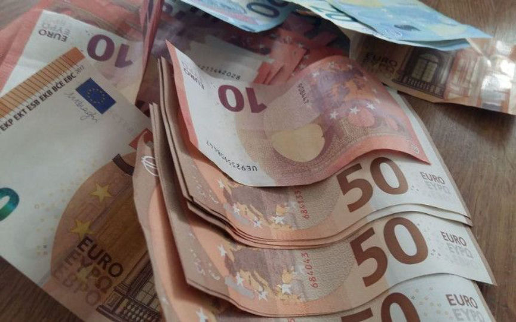
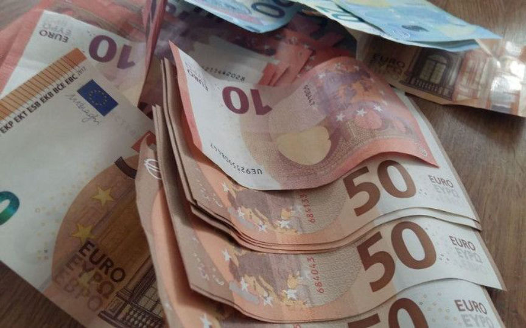

French Soldier Sentenced for Buying Counterfeit Notes on the Darkweb
~3 min read | Published on 2019-09-25, tagged Counterfeits, Sentenced using 541 words.
A French Soldier was handed a partially suspended sentence after he admitted that he had purchased counterfeit banknotes on the dark web. The soldier is reportedly a repeat offender and bought the counterfeit bills to fund his gambling and online betting addiction.
The soldier in his thirties appeared before a judge in the Toulon Criminal Court on September 23 for an immediate sentencing hearing. The prosecution told the court that the soldier was arrested on September 21 in Hyeres by the Judicial Police. According to the prosecution, the Judicial police were notified of the defendant’s activities by the central office for the suppression of counterfeiting money (OCRFM). The OCRFM had been monitoring the soldier’s activities on a dark web forum whose users sell or buy counterfeit banknotes. The OCRFM and the Judicial police then planned to control the delivery of the fake notes.
On the day of his arrest, the soldier drove to Hyeres, where he collected a package bearing his names mailed from Naples, Italy. After getting back into his car, the cops who had been watching him moved in and arrested him. On opening the package, the investigators found two bundles of counterfeit notes wrapped in an aluminum foil and placed in a child’s game box. In total, the investigators found 100 counterfeit €50 banknotes. The soldier was taken into police custody, and his car seized.
The prosecution also told the court that the defendant had been convicted of the same offense in April. In April the Soldier was arrested while on a mission in Guyana. He was found guilty of possession of counterfeit banknotes from the dark web and handed a 1-year suspended prison sentence. The conviction was, however, not added to his criminal record. The prosecution based their request for a 2-year prison sentence on this conviction.
On taking the stand, the soldier admitted that he had accessed the dark web and bought the counterfeit notes. He told the court that he paid €1700 in bitcoins for €5000 in counterfeit banknotes. When asked out why he bought the bills, he said that he needed the money to keep him afloat. He later admitted that he was addicted to gambling and online betting when confronted with the facts that he is salaried and is housed by the army.
The soldier also disclosed that to acquire real money; he purchased goods worth 5 or 10 euros with every counterfeit €50 note. He also never bought from the same merchant more than once to avoid detection.
At the end of the trial, the Judge expressed his disappointment in the soldier since he subscribes to the belief that soldiers have above average morality. He then sentenced the soldier to 8 months in prison and seven months suspended. He also ordered him to seek help to address his gambling addiction. The soldier’s car will be returned to him after he completes the prison time.
The soldier’s arrest and conviction come weeks after Europol supported the dismantling of Europe’s second-largest counterfeit notes distribution ring on the dark web. The ring was reportedly responsible for the production of counterfeit notes worth more than €1.3 million seized in France, Portugal, Spain, and Germany. The takedown resulted in the arrest of 5 suspects.
The soldier in his thirties appeared before a judge in the Toulon Criminal Court on September 23 for an immediate sentencing hearing. The prosecution told the court that the soldier was arrested on September 21 in Hyeres by the Judicial Police. According to the prosecution, the Judicial police were notified of the defendant’s activities by the central office for the suppression of counterfeiting money (OCRFM). The OCRFM had been monitoring the soldier’s activities on a dark web forum whose users sell or buy counterfeit banknotes. The OCRFM and the Judicial police then planned to control the delivery of the fake notes.
The Soldier Made Multiple Purchases on the Darkweb | LP/Aurélie Audureau
On the day of his arrest, the soldier drove to Hyeres, where he collected a package bearing his names mailed from Naples, Italy. After getting back into his car, the cops who had been watching him moved in and arrested him. On opening the package, the investigators found two bundles of counterfeit notes wrapped in an aluminum foil and placed in a child’s game box. In total, the investigators found 100 counterfeit €50 banknotes. The soldier was taken into police custody, and his car seized.
The prosecution also told the court that the defendant had been convicted of the same offense in April. In April the Soldier was arrested while on a mission in Guyana. He was found guilty of possession of counterfeit banknotes from the dark web and handed a 1-year suspended prison sentence. The conviction was, however, not added to his criminal record. The prosecution based their request for a 2-year prison sentence on this conviction.
On taking the stand, the soldier admitted that he had accessed the dark web and bought the counterfeit notes. He told the court that he paid €1700 in bitcoins for €5000 in counterfeit banknotes. When asked out why he bought the bills, he said that he needed the money to keep him afloat. He later admitted that he was addicted to gambling and online betting when confronted with the facts that he is salaried and is housed by the army.
The soldier also disclosed that to acquire real money; he purchased goods worth 5 or 10 euros with every counterfeit €50 note. He also never bought from the same merchant more than once to avoid detection.
At the end of the trial, the Judge expressed his disappointment in the soldier since he subscribes to the belief that soldiers have above average morality. He then sentenced the soldier to 8 months in prison and seven months suspended. He also ordered him to seek help to address his gambling addiction. The soldier’s car will be returned to him after he completes the prison time.
The soldier’s arrest and conviction come weeks after Europol supported the dismantling of Europe’s second-largest counterfeit notes distribution ring on the dark web. The ring was reportedly responsible for the production of counterfeit notes worth more than €1.3 million seized in France, Portugal, Spain, and Germany. The takedown resulted in the arrest of 5 suspects.